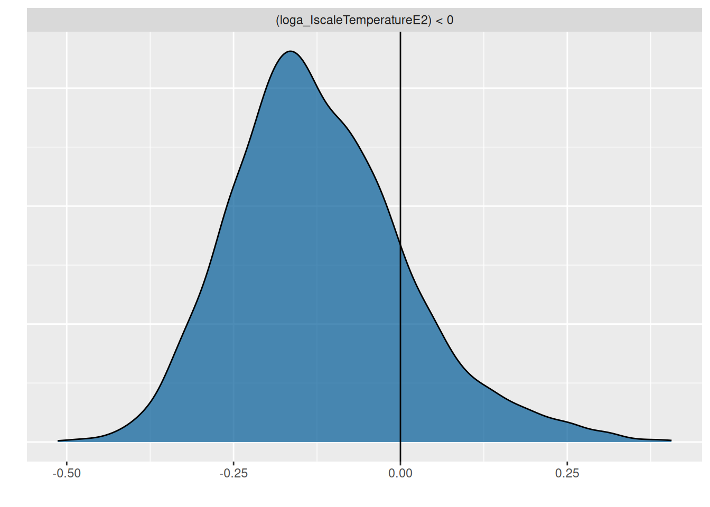

5. Continuous predictors: Size and temperature gradients
This tutorial introduces continuous predictors for parameters, for example estimating how attack rates and handling times are affected by experimental temperature. As seen in the previous tutorial on factors, parameters can be made linearly dependent on a measured predictor x by replacing a~1 with a~x, which then estimates an intercept and a slope.
While we could previously enforce positiveness of parameters by specifying boundaries and/or priors, this is not easily possible with continuous predictors. Instead, a GLM-style log-link can be introduced with a linear model on logscale loga~x, and the inverse-link nlf(a~exp(loga)). Linear model formulas follow standard rules for multiple predictors and interactions, e.g. loga~x+y, loga~x*y etc.
Alternatively, a mechanistic approach can be used when an explicit, potentially nonlinear formula for the dependency of a on x is known from theory. A classical example is the metabolic theory of ecology (MTE) with body size and temperature scaling of biological rates.
While a GLM approach is more phenomenological, mechanistic approaches are theory-driven. Both approaches will be used here.
As an example, we use a dataset from Davidson et al. (2021) downloaded from Dryad. It contains data from two dragonfly nymph species feeding on mosquito larvae. Experiments were performed on a temperature gradient (using a response surface design for temperature and prey density) and predator size was recorded. Feeding trials lasted 24 hours without prey replacement, so we use a dynamical prediction model. For Erythemis simplicicollis, we here estimate temperature effects while controlling for predator size.
We start with a dynamical type 2 null model that does not include temperature, but following the original publication we model handling time depending on predator size. It can be of advantage to scale continuous predictors (to mean 0 and sd 1), either by generating a new column in the dataframe, or by just using scale() in the model formula. brms also takes care of re-scaling for model predictions etc after model fitting automatically. Attack rate a is independent of size and we specify a positive prior as before. For handling times, priors are specified on logscale for logh and do not need to be positive.
Family: binomial
Links: mu = identity
Formula: NE | trials(N0) ~ Type2H_dyn(N0, 1, 1, a, h)/N0
a ~ 1
logh ~ scale(HeadWidth)
h ~ exp(logh)
Data: df (Number of observations: 46)
Draws: 4 chains, each with iter = 2000; warmup = 1000; thin = 1;
total post-warmup draws = 4000
Regression Coefficients:
Estimate Est.Error l-95% CI u-95% CI Rhat Bulk_ESS Tail_ESS
a_Intercept 4.87 0.60 3.82 6.12 1.00 1618 1711
logh_Intercept -3.73 0.05 -3.83 -3.64 1.00 1662 1788
logh_scaleHeadWidth -0.32 0.03 -0.38 -0.27 1.00 2577 2356
Draws were sampled using sampling(NUTS). For each parameter, Bulk_ESS
and Tail_ESS are effective sample size measures, and Rhat is the potential
scale reduction factor on split chains (at convergence, Rhat = 1).
The model returns an intercept and a negative slope for logh, which are based on the scaled predictor. I.e., the intercept is log handling time for scale(HeadWidth)=0, which corresponds to the mean of original predictor HeadWidth, as seen in the conditional effects plot for logh.
Estimates of handling time for a specific predator size are computed with the fitted() function, either on logscale or original scale. Note that the predictor N0 has to specified, too, although handling time does not depend on it.
Finally, model predictions are plotted against the data. brms automatically chooses 3 levels for the predictor HeadWidth: its mean, mean+1sd, mean-1sd.
We now include temperature, which is expected to have a unimodal response in attack rates (modelled with a quadratic term) and a negative effect on handling times (modelled additively). Here, both parameters are modelled GLM-style with a log-link.
Warning: There were 4 divergent transitions after warmup. Increasing
adapt_delta above 0.8 may help. See
http://mc-stan.org/misc/warnings.html#divergent-transitions-after-warmup
Family: binomial
Links: mu = identity
Formula: NE | trials(N0) ~ Type2H_dyn(N0, 1, 1, a, h)/N0
loga ~ scale(Temperature) + I(scale(Temperature)^2)
logh ~ scale(HeadWidth) + scale(Temperature)
a ~ exp(loga)
h ~ exp(logh)
Data: df (Number of observations: 46)
Draws: 4 chains, each with iter = 2000; warmup = 1000; thin = 1;
total post-warmup draws = 4000
Regression Coefficients:
Estimate Est.Error l-95% CI u-95% CI Rhat Bulk_ESS
loga_Intercept 1.86 0.13 1.62 2.12 1.00 2340
loga_scaleTemperature -0.35 0.22 -0.85 0.06 1.00 1867
loga_IscaleTemperatureE2 -0.12 0.13 -0.34 0.19 1.00 1955
logh_Intercept -3.74 0.05 -3.84 -3.64 1.00 2367
logh_scaleHeadWidth -0.41 0.03 -0.48 -0.35 1.00 2759
logh_scaleTemperature -0.50 0.07 -0.64 -0.36 1.00 2148
Tail_ESS
loga_Intercept 2303
loga_scaleTemperature 1675
loga_IscaleTemperatureE2 1735
logh_Intercept 2660
logh_scaleHeadWidth 2774
logh_scaleTemperature 2222
Draws were sampled using sampling(NUTS). For each parameter, Bulk_ESS
and Tail_ESS are effective sample size measures, and Rhat is the potential
scale reduction factor on split chains (at convergence, Rhat = 1).
We find a slightly negative quadratic effect of temperature on attack rate, but the CI includes 0 so we are not so sure about that. Plotting attack rates estimates below, we observe a rather negative than a unimodal response, which is also associated with a lot of uncertainty (credible intervals). The temperature effect on handling time is negative as expected.
Testing the negative quadratic effect reveals a posterior probability \(P(b_\text{quadratic}<0)=0.81\), only.
hypothesis(fit.2, "loga_IscaleTemperatureE2<0")
Hypothesis Tests for class b:
Hypothesis Estimate Est.Error CI.Lower CI.Upper Evid.Ratio
1 (loga_IscaleTempe... < 0 -0.12 0.13 -0.31 0.12 5.13
Post.Prob Star
1 0.84
---
'CI': 90%-CI for one-sided and 95%-CI for two-sided hypotheses.
'*': For one-sided hypotheses, the posterior probability exceeds 95%;
for two-sided hypotheses, the value tested against lies outside the 95%-CI.
Posterior probabilities of point hypotheses assume equal prior probabilities.
p =plot(hypothesis(fit.2, "loga_IscaleTemperatureE2<0"), plot=FALSE)p[[1]] +geom_vline(xintercept=0)

This means the data does not include enough evidence for a unimodal relationship of attack rate with temperature. The model provides a better fit than the previous null model (without temperature), though. Testing a model with a purely linear relationship for attack rate loga~scale(Temperature) is left as an exercise for the reader.
LOO(fit.1, fit.2)
model elpd_diff se_diff p_worse diag_diff diag_elpd
fit.2 0.0 0.0 NA 2 k_psis > 0.7
fit.1 -91.4 38.6 0.99 N < 100 1 k_psis > 0.7
Previous models for the parameters were phenomenological and tested quite general question such as “Is there a hump-shaped relationship between attack rate and temperature?” and “Does body size have a negative effect on handling time?”, using linear models on a logscale. However, if theory suggests an explicit formula describing the relationship between a rate and a predictor (but is subject to unknown scaling factors), we can directly fit this relationship with the functional response model.
For attack rates, Davidson et al. (2021) used the following equation describing the predator’s thermal performance \[a = a_0 \left( T-T_\min \right) \left(T_\max-T \right)^{1/2}\] It is a unimodal curve with lower \(T_\min=10.0\) and upper \(T_\max=42.0\) thermal bounds, which were previously established experimentally. \(a_0>0\) is the only free parameter.
Handling time was modelled following the metabolic theory of ecology (Brown et al. 2004) \[h = e^{h_0}M^{h_1}e^{\frac{h_2}{k\left(T+273.15\right)}} \] where \(k=8.62\cdot10^{-5}\) is the Boltzmann constant. Free parameters include \(h_0\) (intercept), \(h_1\) (allometric exponent), and \(h_2\) (activation energy). Davidson et al. (2021) fixed the allometric exponent \(h_1=-0.75\) (3/4 power law), but here we estimate this free parameter and see if we can retrieve this relationship.
Note that we use HeadWidth^3 as a proxy for body mass in the equation. For all model parameters appearing in nlf(a~ ) and nlf(h~ ), we have to specify that they do not depend on other predictors: a0+h0+h1+h2~1.
Family: binomial
Links: mu = identity
Formula: NE | trials(N0) ~ Type2H_dyn(N0, 1, 1, a, h)/N0
a ~ a0 * (Temperature - 10) * sqrt(42 - Temperature)
h ~ exp(h0) * HeadWidth^(3 * h1) * exp(h2/(8.62 * 10^(-5))/(Temperature + 273.15))
a0 ~ 1
h0 ~ 1
h1 ~ 1
h2 ~ 1
Data: df (Number of observations: 46)
Draws: 4 chains, each with iter = 2000; warmup = 1000; thin = 1;
total post-warmup draws = 4000
Regression Coefficients:
Estimate Est.Error l-95% CI u-95% CI Rhat Bulk_ESS Tail_ESS
a0_Intercept 0.09 0.01 0.07 0.11 1.00 1520 1824
h0_Intercept -17.17 1.62 -20.36 -14.10 1.00 1288 1814
h1_Intercept -0.73 0.06 -0.86 -0.61 1.00 1871 1709
h2_Intercept 0.43 0.04 0.35 0.51 1.00 1290 1802
Draws were sampled using sampling(NUTS). For each parameter, Bulk_ESS
and Tail_ESS are effective sample size measures, and Rhat is the potential
scale reduction factor on split chains (at convergence, Rhat = 1).
Comparing attack rate estimates to the previous GLM-style model, we observe how the current thermal performance model enforces a unimodal relationship between the upper and lower thermal limits.
For handling time, the allometric scaling exponent is estimated very close to the 3/4 power law: -0.73 [-0.86,-0.61]. Temperature and bodymass scaling are similar to the GLM-style model, although estimates are smaller in the lower to medium temperature range.
The actual model predictions (number of eaten prey) show that the mechanistic model is a bit more restricted than the GLM-style model, which predicts a wider range of eaten prey at medium to high densities, due to the stronger temperature effect on handling time. Note that HeadWidth is not specified in effects and predictions are shown for mean size only, then.
LOO model comparison show a weak tendency towards the phenomenological model, but the difference to the mechanistic model is smaller than the standard error. It also explains a bit more of the observed variation (R2).
LOO(fit.2, fit.3)
model elpd_diff se_diff p_worse diag_diff diag_elpd
fit.2 0.0 0.0 NA 2 k_psis > 0.7
fit.3 -4.8 8.2 0.72 N < 100 1 k_psis > 0.7
These models perform very similarly, and we can’t infer any clear preference from the model fittings. Generally, I would recommend using mechanistical models whenever possible: They include more precise information about the (probably nonlinear) relationship between predictors and model variables, and potentially also previous experimental evidence, such as thermal limits, here.
Continuous and categorical predictors
The models above were fitted for the predator Erythemis only, but the dataset includes a second predator species. We test whether the two predators are affected differently by temperature.
For this example, we go back to the phenomenological model. Here we can conveniently use an interaction of the factor Predator with Temperature, but first we fit a null model (without Predator factor) on the full dataset:
Warning: There were 2 divergent transitions after warmup. Increasing
adapt_delta above 0.8 may help. See
http://mc-stan.org/misc/warnings.html#divergent-transitions-after-warmup
Family: binomial
Links: mu = identity
Formula: NE | trials(N0) ~ Type2H_dyn(N0, 1, 1, a, h)/N0
loga ~ (scale(Temperature) + I(scale(Temperature)^2)) * Predator
logh ~ scale(HeadWidth) + scale(Temperature) * Predator
a ~ exp(loga)
h ~ exp(logh)
Data: df (Number of observations: 88)
Draws: 4 chains, each with iter = 2000; warmup = 1000; thin = 1;
total post-warmup draws = 4000
Regression Coefficients:
Estimate Est.Error
loga_Intercept 1.86 0.13
loga_scaleTemperature -0.35 0.22
loga_IscaleTemperatureE2 -0.13 0.12
loga_PredatorPachydiplaxlongipennis -0.88 0.19
loga_scaleTemperature:PredatorPachydiplaxlongipennis 0.71 0.30
loga_IscaleTemperatureE2:PredatorPachydiplaxlongipennis 0.13 0.15
logh_Intercept -3.67 0.05
logh_scaleHeadWidth -0.39 0.03
logh_scaleTemperature -0.50 0.07
logh_PredatorPachydiplaxlongipennis -0.05 0.10
logh_scaleTemperature:PredatorPachydiplaxlongipennis 0.40 0.12
l-95% CI u-95% CI Rhat
loga_Intercept 1.61 2.10 1.00
loga_scaleTemperature -0.82 0.07 1.00
loga_IscaleTemperatureE2 -0.35 0.15 1.01
loga_PredatorPachydiplaxlongipennis -1.25 -0.51 1.00
loga_scaleTemperature:PredatorPachydiplaxlongipennis 0.12 1.31 1.00
loga_IscaleTemperatureE2:PredatorPachydiplaxlongipennis -0.20 0.43 1.01
logh_Intercept -3.77 -3.57 1.00
logh_scaleHeadWidth -0.44 -0.34 1.00
logh_scaleTemperature -0.63 -0.35 1.00
logh_PredatorPachydiplaxlongipennis -0.26 0.13 1.00
logh_scaleTemperature:PredatorPachydiplaxlongipennis 0.17 0.64 1.00
Bulk_ESS Tail_ESS
loga_Intercept 2115 2315
loga_scaleTemperature 1545 1888
loga_IscaleTemperatureE2 1718 1775
loga_PredatorPachydiplaxlongipennis 2017 2589
loga_scaleTemperature:PredatorPachydiplaxlongipennis 1561 2022
loga_IscaleTemperatureE2:PredatorPachydiplaxlongipennis 1973 2183
logh_Intercept 2167 2310
logh_scaleHeadWidth 2975 2384
logh_scaleTemperature 1971 2492
logh_PredatorPachydiplaxlongipennis 1862 2452
logh_scaleTemperature:PredatorPachydiplaxlongipennis 1957 2528
Draws were sampled using sampling(NUTS). For each parameter, Bulk_ESS
and Tail_ESS are effective sample size measures, and Rhat is the potential
scale reduction factor on split chains (at convergence, Rhat = 1).
The predators show some difference in their response to temperature, and Erythemis seems to be more sensitive (both attack rates and handling times). While the null model here predicts a unimodal response of attack rate, the full model predicts for Erythemis mostly a decrease in attack rates at high temperatures (as above, when fitting this species alone) and for Pachydiplax an increase with temperature.